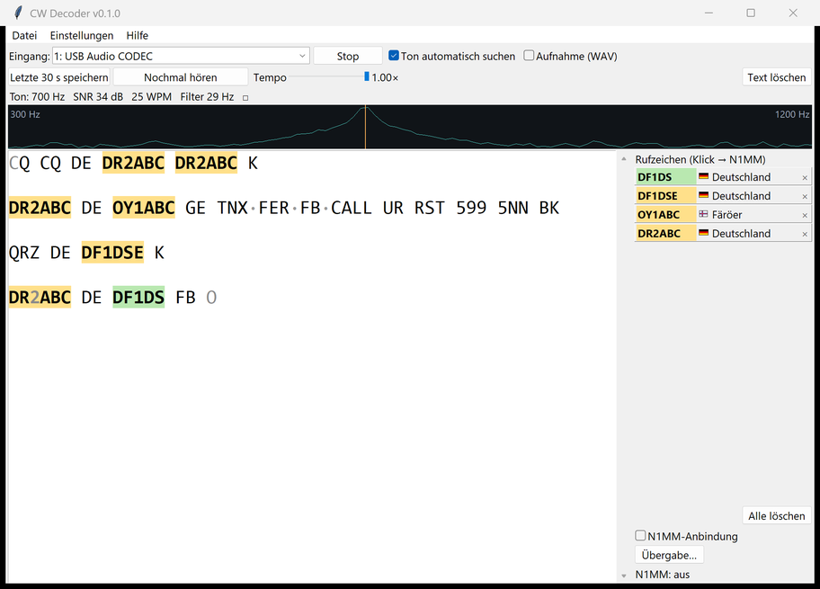
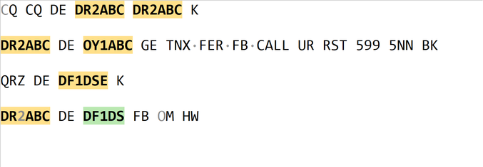
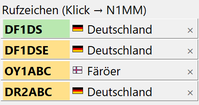
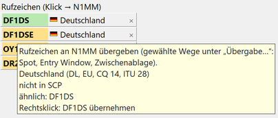
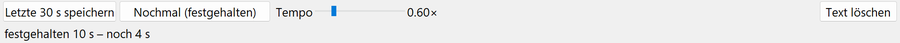
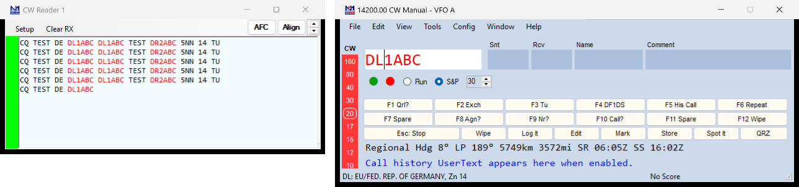

Der CW Decoder hört mit, was aus deinem Funkgerät kommt, und schreibt den Morsetext live mit. Erkannte Rufzeichen kannst du anklicken – mit N1MM Logger+ landen sie direkt im Log.
Das Programm soll dich unterstützen, nicht ersetzen. Bei gut lesbaren Signalen nimmt es dir das Mitschreiben ab. Wo es knapp wird, zeigt es dir, wo du selbst hinhören solltest, und spielt dir die Stelle auf Knopfdruck noch einmal vor.
Bei reinem Rauschen schreibt der CW Decoder absichtlich nichts. Lieber ein leeres Fenster als Buchstabensalat. Sobald eine Station kommt, geht es los.
Der CW Decoder liest eine Station zur Zeit. Sehr schwache Signale knapp über dem Rauschen und sehr unregelmäßiges Geben liest das geübte Ohr besser – dafür gibt es Nochmal hören mit langsamem Tempo.
Nach der Installation und nach jedem Update prüft der Virenscanner die neuen Dateien. Das kann bis zu 10 Sekunden dauern. Solange steht „CW Decoder startet …“ auf dem Bildschirm. Bitte nicht noch einmal starten – ab dem zweiten Mal geht es in einer Sekunde.
Kurz nach dem Start schaut das Programm nach, ob es eine neuere Version gibt. Wenn ja, fragt es dich. Ein Klick auf Herunterladen und installieren erledigt alles, danach startet die neue Version. Von Hand geht es über Hilfe → Nach Updates suchen.
Beide sind getrennte Programme mit eigenen Einstellungen und können gleichzeitig installiert sein. Die Beta erkennst du an „BETA“ im Fenstertitel.
| Was | Wo |
|---|---|
| Aufnahmen und gespeicherte Stellen | Dokumente\CW Decoder\Aufnahmen |
| Einstellungen und Protokoll | %APPDATA%\CWDecoder (Beta: CWDecoder-Beta) |
Der Decoder braucht den Ton des Empfängers als Eingang am PC.
| Wie ist dein Funkgerät verbunden? | Was du oben bei „Eingang“ wählst |
|---|---|
| USB-Kabel (die meisten neueren Geräte) | das Gerät, das meist USB Audio CODEC heißt |
| Über ein anderes Programm (virtuelles Kabel, z. B. VB-Cable) | CABLE Output |
| Kabel in den Line-In oder Mikrofoneingang | den Line-In bzw. das Mikrofon |
Dann auf Start. Unter den Knöpfen erscheint zum Beispiel:
Ton: 840 Hz SNR 28 dB 25 WPM
Das ist die gefundene Tonhöhe, der Abstand des Signals zum Rauschen und das Tempo der Station.

| So sieht es aus | Das bedeutet es |
|---|---|
| DR2ABC | ein erkanntes Rufzeichen |
| DF1DS | ein Rufzeichen aus der Contest-Datenbank – sehr wahrscheinlich richtig gelesen (Kapitel 5) |
| DR2ABC | grau: unsicher erkannt – hier lohnt es sich, selbst hinzuhören |
| TNX·FER·FB | hier hat der Geber keine Pause gemacht; der Decoder hat die Lücke ergänzt |
| * | ein Zeichen, das es im Morsealphabet nicht gibt |
| leere Zeile | längere Pause oder eine neue Station |

Oft stimmt das graue Zeichen. Der Decoder sagt dir nur: Hier war es knapp. Was er gar nicht gehört hat – etwa bei starkem Fading – kann er nicht grau markieren.
Zusammengezogene Morsezeichen stehen so da: <AR> Ende der Nachricht, <KN> nur du, <SK> Ende der Verbindung, <BT> Trennung, <BK> Break.
Jedes erkannte Rufzeichen erscheint rechts als Knopf – das neueste oben, mit Flagge und Land.

Grün heißt: Das Rufzeichen steht in Super Check Partial. Diese Liste nutzen auch N1MM und andere Contest-Logger: rund 50.000 Stationen, die in Contesten aktiv waren.
Gelb heißt nur: steht nicht in der Liste. Wer nur gemütliche QSOs fährt, steht oft nicht drin – das Rufzeichen kann trotzdem stimmen.
Fehlt einem gelben Rufzeichen nur ein Buchstabe zu einem bekannten, steht der Vorschlag im Hinweis, wenn du mit der Maus darauf zeigst.
Mit Rechtsklick → „… übernehmen“ ersetzt du den Knopf. Von allein wird nie etwas ersetzt.

Manche Geber machen mitten im Rufzeichen eine lange Pause, dann steht da DL1A B C. Kennt der Decoder das Rufzeichen – aus der Liste oder weil er es schon einmal am Stück gehört hat –, macht er trotzdem den richtigen Knopf DL1ABC daraus.
Das × rechts am Knopf nimmt ein Rufzeichen aus der Liste, Alle löschen leert sie. Im Text bleibt alles stehen. Hört der Decoder das Rufzeichen wieder, kommt der Knopf zurück.
Der Decoder merkt sich immer die letzten 60 Sekunden. Damit kannst du eine Stelle sofort noch einmal hören.

| Taste | Was passiert |
|---|---|
| Strg + R | Nochmal hören: spielt die letzten 10 Sekunden ab. Der Decoder läuft dabei weiter. |
| Strg + R nochmal | innerhalb von 5 Sekunden nach dem Ende: dieselbe Stelle noch einmal – so oft du willst |
| Strg + S | Speichern: die letzten 30 Sekunden als Tondatei, dazu der mitgeschriebene Text |
Die Statuszeile zählt die 5 Sekunden herunter. Danach nimmt das nächste Strg + R wieder die letzten 10 Sekunden.
Mit dem Regler Tempo spielst du bis auf halbe Geschwindigkeit ab – die Tonhöhe bleibt dabei gleich. Der Regler wirkt sofort, auch mitten im Abspielen.
Liest der Decoder etwas falsch, drück sofort Strg + S. Ist gerade eine Stelle festgehalten, wird genau diese gespeichert. Die Dateien findest du unter Datei → Aufnahmeordner öffnen – mit einer Zeile, was gesendet wurde, helfen sie bei der Verbesserung am meisten.
Der CW Decoder arbeitet hinter N1MMs Fenster „CW Reader“. N1MM zeigt den Text dort an, markiert die Rufzeichen rot – und ein Klick setzt das Rufzeichen ins Log.

Ab jetzt genügt Window → CW Reader. Läuft der CW Decoder noch nicht, startet N1MM ihn selbst. Startet N1MM den CW Reader, schaltet der Decoder die Engine bei Bedarf für diesen Lauf selbst ein. Bei zwei Eingabefenstern (SO2R/SO2V) gilt das Radio mit dem grünen Punkt (in N1MM unter Broadcast Data Radio anhaken).
Beim Verbinden blitzt kurz ein leeres Fenster „Fldigi CW Engine 1“ auf – das braucht N1MM. Schließt du den CW Reader, läuft der Decoder weiter.
Normalerweise musst du nichts einstellen. Das Programm merkt sich Eingang, Tonhöhe und alle Haken.
| Wo | Was du dort einstellst |
|---|---|
| Einstellungen → Puffer und Nochmal hören… | wie lange zurück gespeichert und abgespielt wird, das Starttempo und das Ausgabegerät – zum Beispiel Kopfhörer statt Lautsprecher |
| Einstellungen → Zusammengeklebte Wörter trennen | die ergänzten Lücken mit Punkt ein- oder ausschalten |
| Übergabe… (rechts unten) | auf welchen Wegen ein Rufzeichen zu N1MM geht |
Unter Übergabe… kannst du weitere Wege einschalten:
| Taste | Wirkung |
|---|---|
| Strg + R | Nochmal hören |
| Strg + S | Letzte 30 Sekunden speichern |
Das ist Absicht. Der Decoder schreibt erst, wenn wirklich eine Station sendet.
Der Decoder muss das Tempo jeder neuen Station erst kennenlernen. Nach ein, zwei Zeichen sitzt es.
Der Geber hat mitten im Rufzeichen Pausen gemacht. Der Decoder schreibt, was gesendet wurde – der Knopf rechts wird trotzdem richtig, sobald das Rufzeichen bekannt ist.
Der Geber hat keine Pausen zwischen den Wörtern gemacht. Mit eingeschaltetem Trennen steht dort TNX·FER·FB·CALL.
Der Decoder folgt immer einer Station. Liegen zwei sehr dicht beieinander, kann er sie nicht trennen. Klick im Spektrum auf die Station, die du lesen willst.
Der CW Decoder konnte die Engine nicht einschalten, meist weil der Port belegt ist (nächste Frage). Sonst den CW Reader in N1MM schließen und neu öffnen.
Meist läuft noch fldigi als Decoder für N1MM. fldigi beenden und im CW Decoder den Haken N1MM-Anbindung einmal aus- und wieder einschalten.
Hilfe → Fehler melden… zeigt einen Bericht und öffnet auf Wunsch eine vorausgefüllte Meldung auf GitHub. Das Programm sendet selbst nichts. Am meisten hilft eine mit Strg + S gespeicherte Stelle.
CW Decoder ist freie Software (GPL-3.0). Länderdaten: cty.dat (AD1C). Rufzeichen-Liste: Super Check Partial. Viel Spaß und 73 de DF1DS.